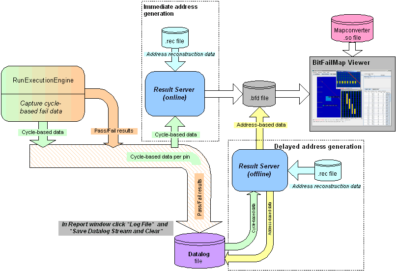

Use cases
This section describes how to set up the Memtest test methods for the use cases
- Debugging (see Debugging)
- Failure analysis (FA) (see Failure analysis) and
- High-volume manufacturing (HVM) (see High-volume manufacturing).
Set the Immediate_bitmap_data_to_file parameter of the ExecutionEngine test method according to your use case:
- For debugging, set Immediate_bitmap_data_to_file to Yes.
- For failure analysis and high-volume manufacturing, set Immediate_bitmap_data_to_file to No.
An overview of the test methods workflow for the above use cases is shown in the figure below and described more in detail in the following sections.

Functional changes
- Introduced before SmarTest 6.3.2
- MTP 3.0.1: The Memtest test methods have been replaced by the ExecutionEngine testmethod